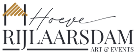
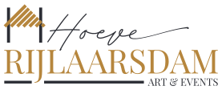
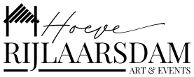

hoofdlockup — logo-lockup.svg




uploads/Logo RIJLAARSDAM huisstijl.pdf — geen raster meer nodig. Kies op ondergrond: zwarte caps op wit en crème, gouden caps als het beeld al rustig is, wit op flessengroen en op foto's, mono voor stempel en gravure. Het liggende lockup is voor smalle balken (navigatie, briefhoofd), nooit als hoofdlogo op een pagina. Minimaal 48px hoog voor het volledige lockup, 32px voor het losse schuurmerk. Nooit hertekend, uitgerekt of van kleur veranderd buiten deze versies.